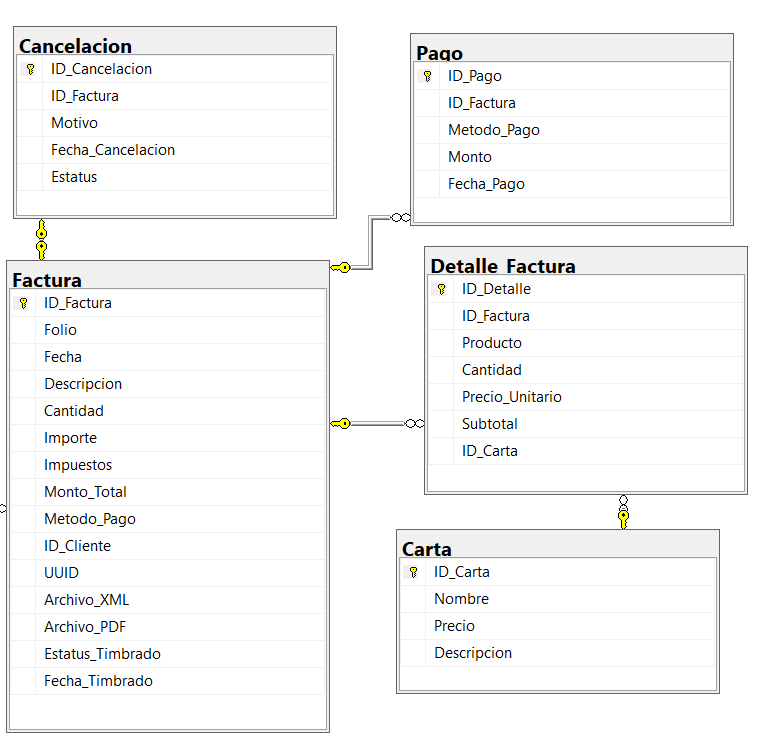

Descripción
El modulo de Facturación permite registrar, consultar, actualizar y eliminar facturas de las ventas realizadas, garantizando un control fiscal y administrativo eficiente. Además, gestiona los pagos múltiples, los detalles de productos y las cancelaciones, cumpliendo con los procesos de facturación electrónica requeridos en empresas grandes.
Usuarios del subsistema
- Cliente
- Dueño
Requerimientos por usuario - Facturación
Cliente
El cliente debe ser capaz de:
- Registrar una nueva solicitud de factura electrónica proporcionando:
- Nombre
- RFC
- Uso de factura
- Tipo de pago
- Correo electrónico
- Solicitar la corrección de una factura emitida, indicando el motivo de la modificación.
- Visualizar sus facturas electrónicas emitidas, consultando información relevante como:
- Fecha de emisión
- Número de folio
- ID o número de cliente
- Importe total
- Método de pago utilizado
- Visualizar los productos adquiridos en la factura desde la tabla Carta.
Dueño
El dueño debe ser capaz de:
- Emitir nuevas facturas electrónicas siguiendo el proceso fiscal completo:
- Generación: El sistema crea la factura con datos del cliente, productos y montos.
- Validación: Se verifica que la estructura cumpla con las reglas del SAT.
- Timbrado: El comprobante se envía al PAC para obtener el sello digital y el UUID.
- Almacenamiento: El sistema guarda automáticamente el archivo XML y PDF.
- Disponibilidad: El cliente puede descargar sus facturas en cualquier momento.
- Corregir facturas emitidas en caso de errores detectados.
- Cancelar facturas cuando sea necesario, registrando:
- ID del cliente
- Nombre
- Fecha de cancelación
- Motivo
- Visualizar las facturas emitidas, accediendo a información clave como:
- Folio fiscal
- Fecha de emisión
- Cliente asociado (ID y nombre)
- Importe total
- Método de pago
- Estado del timbrado (pendiente, timbrada o cancelada)
- Consultar facturas por cliente, rango de fechas o folio fiscal.
- Generar reportes de facturación por periodo, método de pago o producto.
Formulario - Crear Factura
Modelo Relacional - Facturación
Diagrama con las tablas Factura, Detalle_Factura, Pago y Cancelacion.
Campos - Factura
| Campo | Tipo / Ejemplo | Descripción |
|---|---|---|
| ID_Factura | Entero | Identificador único de la factura. |
| Folio | "F000123" | Número consecutivo para control fiscal. |
| Fecha | "2025-09-04" | Fecha de emisión. |
| Descripción | "3 cafés latte y 2 croissants" | Concepto de la venta. |
| Cantidad | 5 | Número total de productos facturados. |
| Importe | $300.00 | Subtotal sin impuestos. |
| Impuestos | $48.00 | IVA u otros impuestos aplicados. |
| Monto_Total | $348.00 | Total a pagar con impuestos incluidos. |
| Método_Pago | "Efectivo", "Tarjeta", "Mixto" | Forma de pago. |
| ID_Cliente | (Relación) | Cliente asociado a la factura. |
| UUID | "550e8400-e29b-41d4-a716-446655440000" | Identificador fiscal único (SAT). |
| Archivo_XML | "facturas/F000123.xml" | Archivo digital XML de la factura. |
| Archivo_PDF | "facturas/F000123.pdf" | Archivo digital PDF de la factura. |
| Estatus_Timbrado | "Pendiente", "Timbrada", "Cancelada" | Estado de timbrado fiscal. |
| Fecha_Timbrado | "2025-09-04 12:35:20" | Fecha de certificación. |
Campos - Detalle_Factura
| Campo | Tipo / Ejemplo | Descripción |
|---|---|---|
| ID_Detalle | Entero | Identificador único del detalle. |
| ID_Factura | (Relación) | Factura a la que pertenece el detalle. |
| Producto | "Café Latte" | Nombre del producto. |
| Cantidad | 2 | Unidades del producto. |
| Precio_Unitario | $60.00 | Precio por unidad. |
| Subtotal | $120.00 | Total de ese producto. |
Campos - Pago
| Campo | Tipo / Ejemplo | Descripción |
|---|---|---|
| ID_Pago | Entero | Identificador único del pago. |
| ID_Factura | (Relación) | Factura asociada al pago. |
| Método_Pago | "Efectivo", "Tarjeta" | Forma de pago utilizada. |
| Monto | $500.00 | Cantidad pagada con ese método. |
| Fecha_Pago | "2025-09-22" | Fecha y hora del pago. |
Campos - Cancelacion
| Campo | Tipo / Ejemplo | Descripción |
|---|---|---|
| ID_Cancelacion | Entero | Identificador único de la cancelación. |
| ID_Factura | (Relación) | Factura cancelada. |
| Motivo | "Error en datos" | Razón de la cancelación. |
| Fecha_Cancelacion | "2025-09-22" | Fecha de cancelación. |
| Estatus | "Cancelada" | Estado de la factura. |
Campos - Carta
| Campo | Tipo / Ejemplo | Descripción |
|---|---|---|
| ID_Carta | Entero | Identificador único del producto en la carta. |
| Nombre | "Café Latte" | Nombre del producto o platillo ofrecido. |
| Descripción | "Café espresso con leche espumosa" | Detalles o notas del producto. |
| Precio | $60.00 | Costo unitario del producto en la carta. |